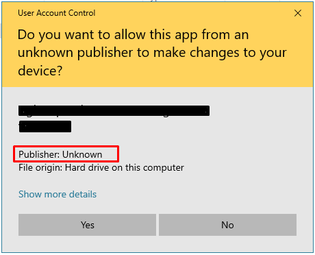
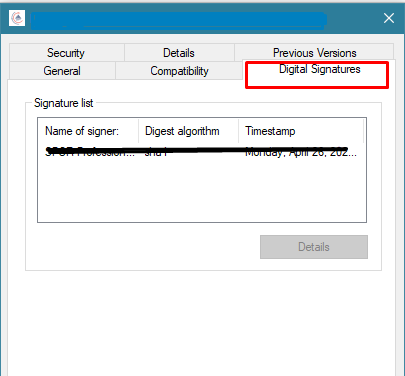

The purpose of injecting the signing certificate into your build executable file is to prevent it from showing unknown publisher error. If your application will have a valid signing certificate and that certificate will install into the Microsoft certificate authority then you will not be prompt with unknown publisher error while launching your application like below:

To get rid of this you need a sigining certificate (preferred .pfx file) and you executable file. Both must be on same directory.
Now create a new .txt file into same directory where your signingcertificate.pfx and application.exe is exist. after create that file put the following batch script into it
"C:\Program Files (x86)\Microsoft SDKs\ClickOnce\SignTool\signtool.exe" sign /f "signingcertificate.pfx" /p Abcd@123 /t http://timestamp.digicert.com application.exe
First paramter will be the location of signtool.exe from your computer. The path which i set above is a default one but it could be different in your case. signtool.exe is a part of windows sdk for more details visit microsoft SignTool.exe page
/f parameter will be the signing certificate name including extension
/p will be the password of the signing certificate.
/t will be the time stamp, here we are grabbing the time stamp from digicert.com but you can use other services too
and last would be your application exe name
after creating this .txt file rename the file to .bat extension at the end. When you run that script by double click, it will inject the certificate into the exe. To verify that certificate is injected successfully right click on the exe and you will see an additional tab "Digital Signatures" in the properties of the exe
